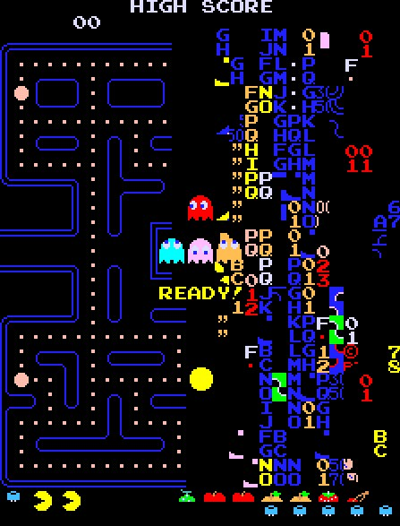
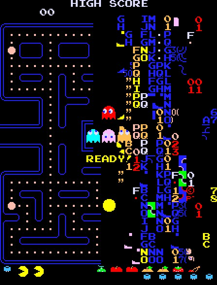

Name:
The name Pac-Man comes from the Japanese word "paku paku", so it means "open the mouth and close it".At first it was named "Puck Man" but when it was released in the USA; they were afraid that the name would be
changed to "Fuck Man", so now the game was renamed to "Pack-Man".
The character Pac-Man:
Pac-Man was designed by Toru Iwatani and he told, that he was inspired by a pizza, which lost a piece.Level 256
Although the main idea was, that the game wouldbe endless, the split-screen-level 256 was irresolvable.
That actually wasn't scheduled, but it happened
by the reason of a mistake.